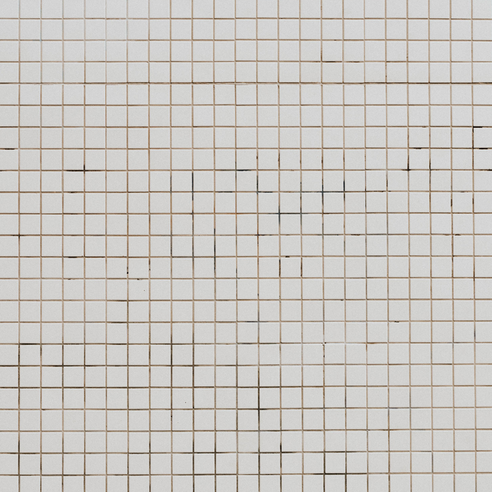

Cura
Al centro del nostro simbolo c'è una persona: è da lì che parte ogni cosa che facciamo. Ci prendiamo cura di bambini e ragazzi, adulti e anziani in condizione di fragilità, con un'assistenza che unisce aspetti sanitari, sociali, psicologici ed educativi. Per i più giovani significa accompagnarne la crescita; per tutti, ricevere un'attenzione costruita sulla propria storia.

Lavoro
Una porta è un passaggio dall’attesa alla possibilità. Attraverso formazione professionale, laboratori artigianali, tirocini e collaborazioni con cooperative e imprese sociali, accompagniamo giovani con disabilità o in condizione di svantaggio verso un’occupazione stabile: un lavoro vero, che porti autonomia economica, un ruolo riconosciuto e la possibilità di partecipare pienamente alla vita della comunità.
Luoghi
Un tetto non protegge solo chi ci vive: accoglie chi entra, chi si ferma, chi passa. Diamo vita a luoghi aperti alla comunità, come gallerie d’arte, botteghe, spazi di cultura e ristorazione, in cui le persone fragili non sono ospiti, ma protagoniste. Spazi dove lavorare, creare e incontrarsi, e dove l'inclusione diventa un'esperienza quotidiana.